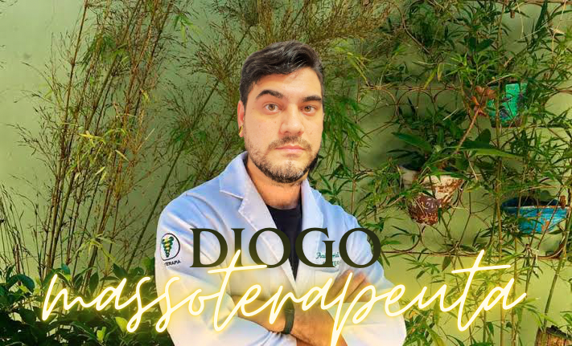
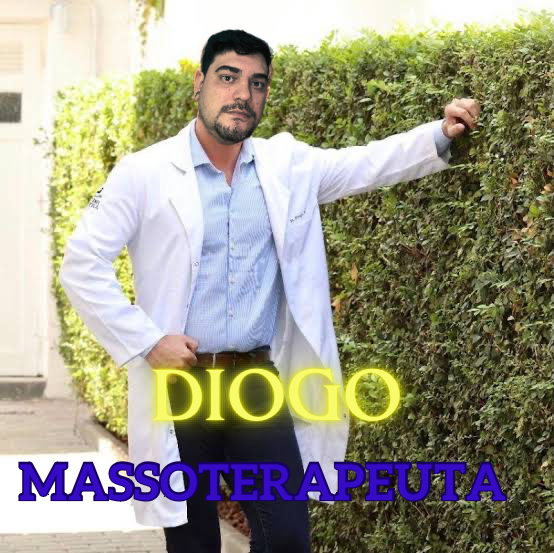

Sou Diogo Aguiar, massoterapeuta desde 2019,
especialista em Quick Massage.

Atuei nas empresas como hospital Leforte e Concreserv,
aplicando Quick massage nos funcionarios e colaboradores.
A massagem dura em torno de 15 minutos e fazem toda a diferença no decorrer do dia.
As massagens em eventos sāo realizadas de acordo com o cronograma da empresa e nos horarios programados.
